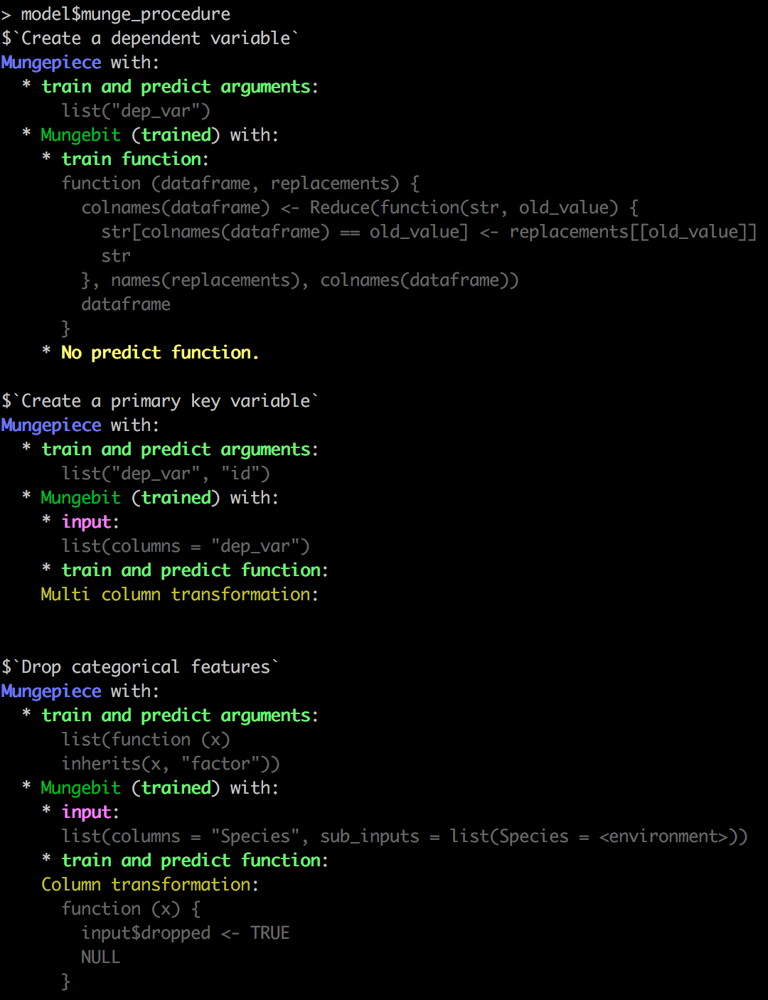

After your model is trained, you want to be able to make use of it later for validation or production scoring. In some situations, like when your end goal is to produce a static report, this may not be necessary, but even in these cases it may be useful to reproduce the scores later.
A model object is an R object that is able to reproduce the scores
generating during training on the same messy, production data that was used
to train the model. Typically, R model objects like lm
or gbm objects are insufficient for reproducing
scores in a live scoring environment: you will have to "productionize" your
feature engineering pipeline as well after the data scientists have prototyped it.
In the Syberia modeling engine, feature engineering is a critical production-ready aspect of the process that does not require any additional code: the code you ran in mungebits and the parameters that were selected during training (for example, the columns that were dropped after detecting for correlations, the means of features to use during imputation, etc.) are stored on the model object.
This allows us to faithfully replicate the end-to-end data science process that produced the model on single rows that come through in a production system. Alternatively, we can use the model object to generate validation scores on new samples from the original distribution, e.g., when new customers arrive or when we get additional data.
The default model object container that ships with the modeling engine is a tundra container (tundra because it freezes your model for production use, and tundra is in Syberia... get it?).
A tundra container is an R6 object that consists of a munge procedure, a train function, a predict function and inputs saved during training. The munge procedure is copied directly from the data stage.
# Place this code in models/dev/example3.R
list(
import = list(R = "iris"),
data = list(
"Create a dependent variable" = list(renamer ~ NULL, c("Sepal.Length" = "dep_var")),
"Create a primary key variable" = list(multi_column_transformation(seq_along) ~ NULL, "dep_var", "id"),
"Drop categorical features" = list(drop_variables, is.factor)
),
model = list("lm", .id_var = "id"),
export = list(R = "model")
)
Note that we have added ~ NULL. This is very important to ensure
the model predicts correctly: we do not want to rename the dependent variable during
prediction nor do we want to create an id column. Now let's execute the model.
run("example3")
model$munge_procedure
model$predict_fn
You should see some colorful output!

Let's try to make a prediction: model$predict(iris[1:5, ]). You can
also inspect how the model is munging the data using model$munge(iris),
or even execute just a subset of the munge procedure using model$munge(iris, 1),
model$munge(iris, 1:2), model$munge(model$munge(iris, 1), 2), etc. This can be very helpful for debugging.
R is a LISP which means that most R objects, including model objects, are recursively
composed of lists and atomic vectors. This makes serialization very easy in R! In fact,
the built-in saveRDS is capable of serializing most objects.
(If you have custom C pointers or difficult-to-serialize environment objects you can
define a custom serializers — see the appendix).
To save the model object to a file, simply use saveRDS:
dir.create("~/tmp")
saveRDS(model, "~/tmp/model.rds")
readRDS("~/tmp/model.rds")$predict(iris[1:5, ])
You will notice the predictions are the same as before.
R's easy serialization capability seems like a free lunch but there is a dangerous trade-off. If you use environments or functions (which implicitly have an environment attached) anywhere in your model objects it is possible to capture far more than you intended upon serialization.
For example, instead of capturing just the model objects, you might capture most of the data in the global environment and store gigabytes of unnecessary serialized R objects! This is not a problem in languages like Python or Java because every object must have its own serialization (pickling) code.
To relieve this issue, the modeling engine comes with some simple deflation triggers that prune any closures (functions) on the model objects from carrying too much information. Because R is such a dynamic language, there is in general no way of identifying what will be needed by a given function, but we try our best: we assume the train and predict functions of a classifier are pure.
Pure functions do not make use of global variables or variables in the parent environment of the function. This rules out helper functions but increases stability and serializability. Simply put your helpers in the body of the train or predict functions.
If you find your model objects getting large unexpectedly, carefully examine
your code and what you are storing in input, or modify
the model stage accordingly.
A lot of R models serialize out-of-the-box, but some models (like xgboost) represent their underlying state in a C structure which is not natively serializable by R.
For such models, you may have to define additional serialization procedures. TODO: Explain how.